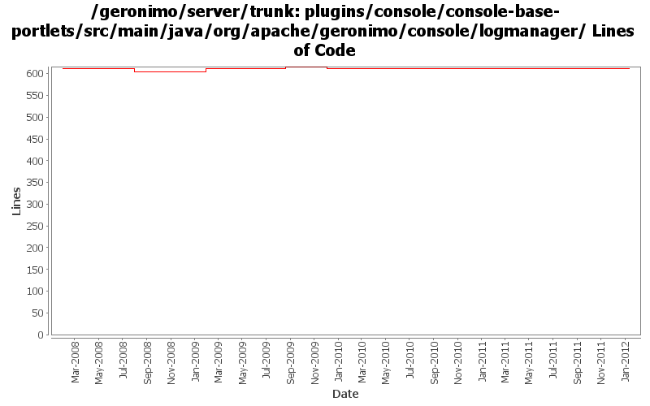

[root]/plugins/console/console-base-portlets/src/main/java/org/apache/geronimo/console/logmanager

| Author | Changes | Lines of Code | Lines per Change |
|---|---|---|---|
| Totals | 17 (100.0%) | 66 (100.0%) | 3.8 |
| xuhaihong | 6 (35.3%) | 37 (56.1%) | 6.1 |
| jbohn | 1 (5.9%) | 14 (21.2%) | 14.0 |
| djencks | 4 (23.5%) | 13 (19.7%) | 3.2 |
| jdillon | 3 (17.6%) | 1 (1.5%) | 0.3 |
| gawor | 1 (5.9%) | 1 (1.5%) | 1.0 |
| vamsic007 | 2 (11.8%) | 0 (0.0%) | 0.0 |
GERONIMO-6259 don't try to mess up pax logging so hard
12 lines of code changed in 1 file:
No function change.
1. Use valueOf instead of new for primitive wrapper
2. Remove some unused variables in the codes
5 lines of code changed in 3 files:
a. Use valueOf instead of new for primitive wrapper class
b. Fix a call to equals() comparing different types
27 lines of code changed in 2 files:
fix problem in EarConfigBuilder when constructing sub-configurations for wars. Rename DeploymentContext.getBundle to getDependencyBundle to try to make it clearer that it is temporary and not always available. Start updating pluto/console stuff for pluto 2.
1 lines of code changed in 3 files:
GERONIMO-4803 ClassCastExeption after disabling access log valve for web container
5 lines of code changed in 1 file:
a little cleanup for the web access log viewer portlet
14 lines of code changed in 1 file:
get the file name nicely
1 lines of code changed in 1 file:
More loggers back to static
1 lines of code changed in 1 file:
(GERONIMO-3985) Use SLF4J as the primary logging facade for Geronimo
0 lines of code changed in 2 files:
Once the Config File is changed from LogManagerPortlet, the logFile used by LogViewerPortlet should be changed to the one from new configuration or else it will result in an error.
0 lines of code changed in 2 files: